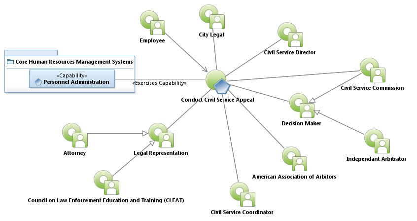
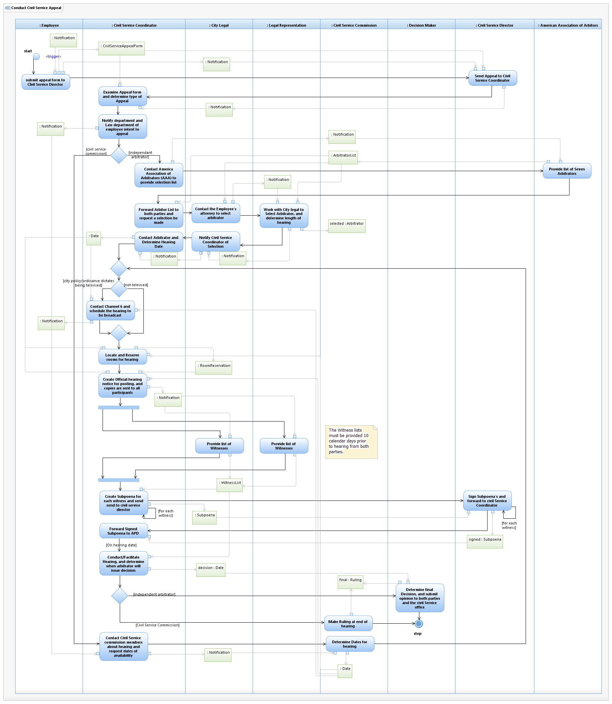

Use Case Model: Conduct Civil Service Appeal
Architect: Aaron Brown, IT Enterprise Architect, Senior
Date Last Modified: 04/08/2013
User Review: Gregg Olson, Leticia Paredes, Barry Cook
Date: 04/08/2013
An employee has been bypassed for a promotion, demoted, suspended, or put on indefinite suspension, and has filed an appeal of the department's decision.
Follow link to Role Definitions

Use Case Model: Conduct Civil Service Appeal

Activity Model:
Conduct Civil Service Appeal
Activity Documentation
| Activity | Documentation |
|---|---|
| Locate and Reserve rooms for hearing | Two rooms are reserved, one for channel 6's equipment, and one for the actual hearing. |
Note: When the activity is self explanatory no documentation is provided.